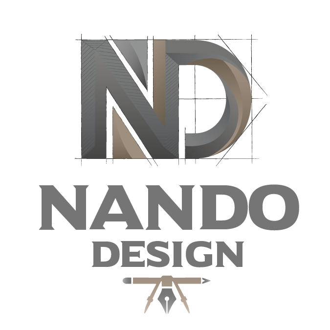

Software Engineering × Product Design
Interfaces que funcionam, comunicam e fazem sentido.

Quem sou e o que construo
Estudante de Engenharia de Software com background em Design Gráfico, explorando a interseção entre desenvolvimento, interfaces e experiência do usuário.
Meu foco é construir produtos digitais combinando código bem estruturado, pensamento visual e atenção à experiência.
Projetos publicados no Behance
Ferramentas que uso no dia a dia
Onde meu trabalho se encontra
Design defines the experience. Code makes it real.
Trajetória acadêmica
Atividade nos últimos 12 meses
Vamos conversar
Estou aberto a oportunidades, projetos colaborativos e conversas sobre tecnologia, design e produtos digitais.